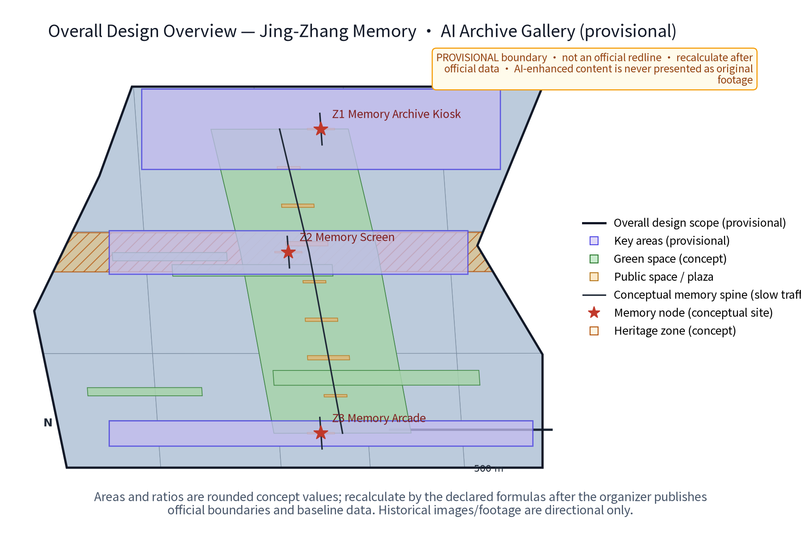
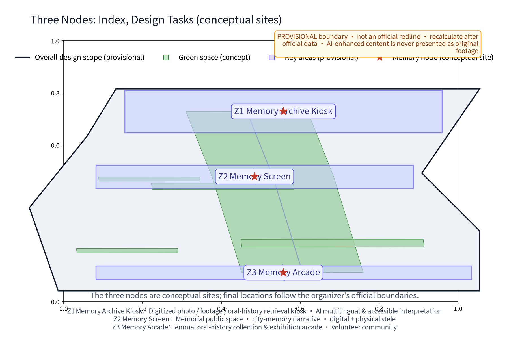
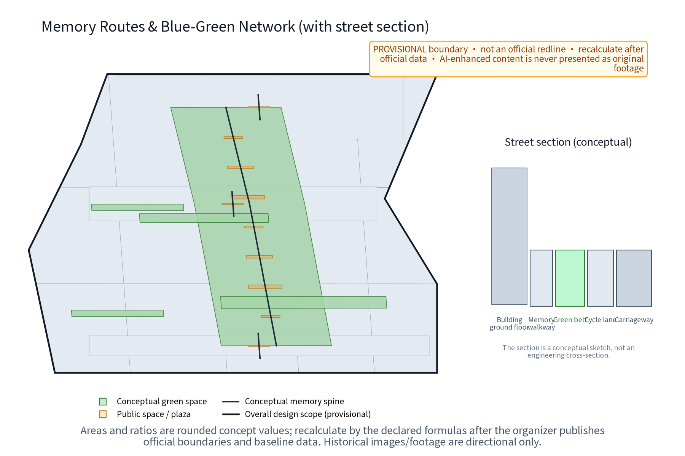
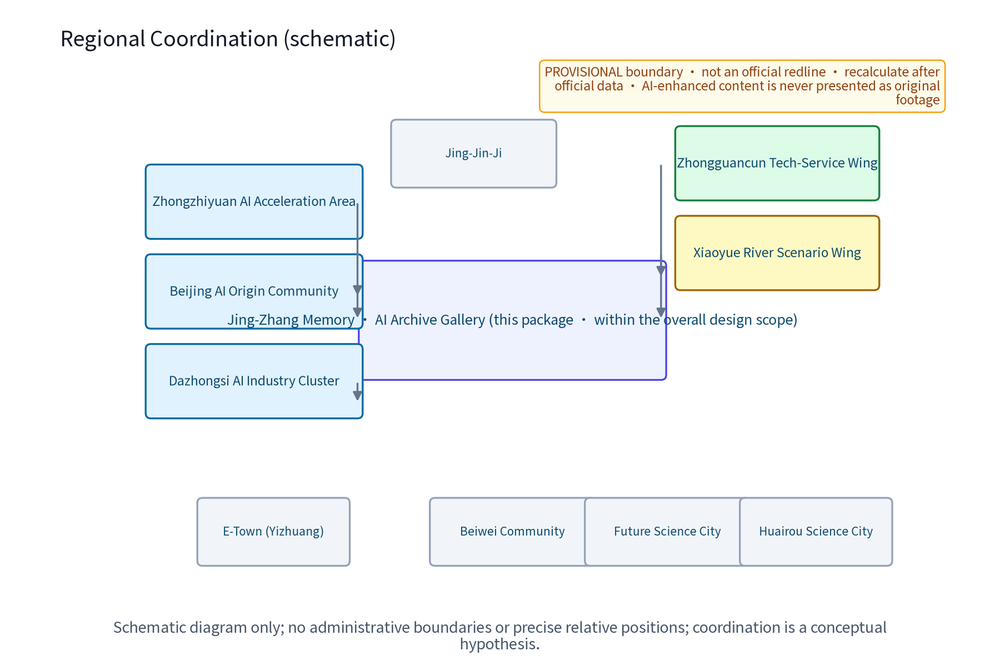
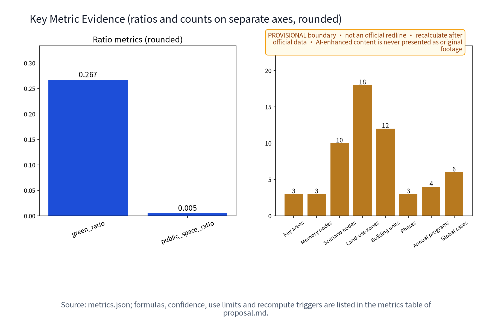

Overview, Land-use Zones & Slow Mobility

The memory route links Z3 -> Z2 -> Z1; figures are interpretation surfaces, while geometry/*.geojson is authoritative.
Dazhongsi side: exhibits, events, developer clinic
AI Origin side: comparison, deliberation, honor display
Zhongzhiyuan side: intake, rights, retrieval
Three Formal Core Metrics
Values are recomputed from package site_boundary, green_space and public_space in EPSG:4548; data-value retains machine values while the screen uses rounded values. Recompute after official boundary, green-line and public-space data arrive. FAR and height remain unknown/null.
Three Levels, Three Areas, Two Wings and Functions
Coordinated research
Culture, industry, future city and regional interfaces.
Overall design
Slow memory route, three nodes, east-west stitch and north-south continuity.
Key areas
Zhongzhiyuan AI Acceleration Area, Beijing AI Origin Community, Dazhongsi AI Industry Cluster.
Two wings
Zhongguancun Tech-Service Wing and Xiaoyue River Scenario Wing; both are unverified coordination hypotheses.
Five functions: full-stack AI innovation, world-class AI ecosystem, AI+ scenario empowerment, intelligent vibrant city, and global AI governance voice.
Key Areas & Blue-Green Public Space

Z1/Z2/Z3 are three states of one Proof-Memory Loop.

Green spine, screen edge, arcade room and kiosk gate.
AI Scenarios & Ecosystem Coverage

12 scenario cards, 3 industry tests and 6 personas are mapped through space, operation, data and human review. Only cleared/consented/de-identified/synthetic inputs; anonymized aggregation only, key decisions require human review, and excessive surveillance is prohibited.
| Test | Purpose | Failure action |
|---|---|---|
| T01 Oral history | Transcription, provenance, withdrawal chain | Quarantine and manual path |
| T02 Guide | Multilingual and accessibility equivalence | Return to human editing |
| T03 Release chain | Auditable rights-to-display path | Hold/remove from display |
Renewal Projects, Task Coverage & Self-Check Status

Each operating metric records formula, threshold/range, unknown_to_verify baseline, frequency, evidence, role and failure action. Phasing is near 1-3 years, mid 3-5 years and long 5-10 years; P01-P14 include role-type RACI and stop/exit actions. Sources, rights, risks, bilingual parity and embedded fonts are recorded in the package ledgers.
Sources, Rights, Assumptions & Boundaries
The cultural narrative separates verifiable history, current leads and original concepts. International cases are mechanism comparisons only; no partnership, authorization, scale or outcome transfer is implied. Unverified area, title, permission, operation, brand availability and historical detail remain provisional/unknown/to_verify.
This is an offline interpretation layer, not an approval file, redline, engineering drawing or implementation commitment. AI-enhanced illustrations are never presented as original footage.